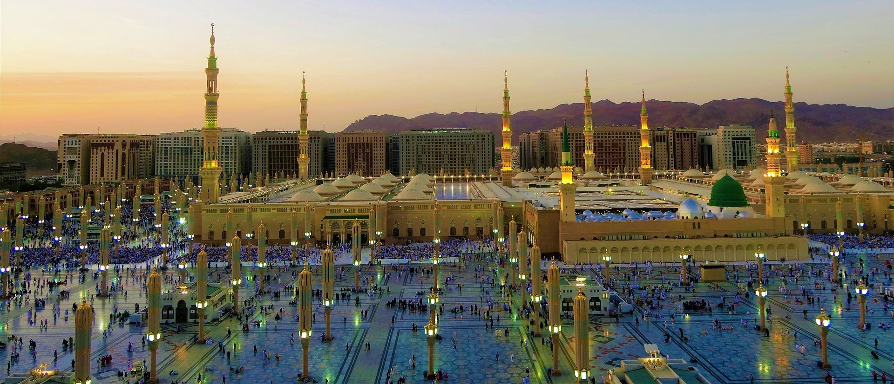

Umrah: journey for the heart and soul
Discover the essence of Islam on an Umrah pilgrimage, following scriptural teachings. Visit holy sites, checkout our itinerary and relish local cuisine.
Umrah, also known as the minor pilgrimage, is a spiritual journey to the holy city of Mecca in Saudi Arabia. It is considered important in Islam as it is one of the five pillars of the faith. According to Islamic beliefs and scripture, Umrah has numerous benefits for the individual both physically and spiritually.
Performing Umrah is believed to purify the soul, erase past sins, and increase one's level of spirituality and devotion to Allah. It is also believed to bring blessings what Allah pleases, as well as improving one's health and overall well-being. Furthermore, Umrah is also seen to increase one's knowledge and understanding of Islam, and to strengthen bonds between fellow Muslims.
In the Quran, Allah states that "performing Umrah is an expiation for the sins committed between it and the previous one." (2:196). This highlights the importance of regular performance of Umrah as a means of seeking forgiveness and improving one's relationship with Allah.
In conclusion, Umrah holds great significance for Muslims and is seen as a means of attaining spiritual growth, forgiveness, blessings, and closer connection with Allah.
Here is an itinerary suggestion which we researched and covered all significant spots and acts of worship in it. Download Nusuk app after getting visa number it help in booking and checking slots for Ziyarah at Rawza e Rasool and Umrah. You can adjust the number of days try to offer at least one Jumu’ah at Masjid Al Haram and one at Masjid An Nabawi.
Day 1: Change into ihram before meeqat.
• Arrival in Jeddah
• Arrival at Jeddah airport and transfer to the hotel in Mecca
• Check-in
• Perform Umrah at Masjid Al Haram
• Spend the rest of the day meditation, reflection, and prayers.
Day 2: Relax and Explore Mecca
• Offer Friday prayers at Masjid Al Haram
• Spend the day exploring the holy city of Mecca and relaxing.
Day 3: Use Masjid Ayesha as Miqat for Further Umrahs
• Start the day by travelling to Masjid Ayesha, which is used as a miqat for Umrah.
• Perform as many Umrahs as desired, visiting Masjid Al Haram each time.
• Spend the rest of the day meditation, reflection, and prayers.
Day 4: Day Trip to Jeddah
• Take a day trip to Jeddah and visit its stunning beaches.
• Explore the city and its historical sites.
• Watch the sunset at the Red Sea
Day 5: Visit Gaar e Hira and Gaar e Thawr.
• Hike to Gaar e Hira and Gaar e Thawr, (hike is hard to each can split plan
into two
different
days) two significant caves in Mecca
• Reflect on their historical importance and offer salat.
Day 6: Journey to Madinah
• Take a taxi from Mecca to Madinah, taking the route of Badr.
• Make a stop at Badr, the site of the historic battle which changed
the course of history
and
shaped the world which we live in now.
• Reflect on the significance of this battle in Islamic history.
• Arrive in Madinah and check-in to the hotel.

Day 7: Spend Time in Masjid Al Nabawi
• Spend most of the day in Masjid Al Nabawi, offering prayers and meditating.
Day 8: Visit Holy Sites in Madinah
• Take a hop-on hop-off tour to visit all the significant holy sites in Madinah.
• Offer prayers at each site and reflect on their importance.
• Book appointments for visiting Rawza e Rasool and Riaz ul Jannah using the Nusuk app.
Day 9: Offer Jumu’ah at Masjid an Nabawi
• Spend the day exploring the streets and praying at Masjids.
Day 10: Day Trip to Khyber
• Take a day trip to Khyber, a historic site in Madinah.
• Reflect on its significance in Islamic history and offer prayers.
Day 11: Departure
• Depart from Madinah airport for home or continue to Al Ula for further exploration.
In this itinerary, you will have the opportunity to perform Umrah multiple times, visit all the important holy sites in Mecca and Madinah, and reflect on the historical significance of each site. Additionally, you will also have the chance to relax and enjoy the stunning beaches of Jeddah and explore the city. The itinerary emphasizes the importance of spending time in meditation and prayer at each site, making the pilgrimage a truly spiritual experience.
Here is a list of traditional and local food items to try during the Umrah itinerary:
1. Dates - A staple food in the Arab world, dates are a must-try during your visit to Mecca
and
Madinah.
2. Lamb Machboos - A traditional Arabian dish made of lamb, rice, and spices, it is a
popular
choice in both Mecca and Madinah.
3. Kabsa - A spicy dish made with chicken, lamb or beef, and a mixture of spices and herbs
served with rice.
4. Shawarma - A popular street food that consists of marinated meat, vegetables, and sauces,
wrapped in a pita bread.
5. Falafel - A vegetarian dish made from chickpeas, fava beans, or a combination of both,
deep-fried and served in a pita bread.
6. Stuffed Grape Leaves - A popular vegetarian dish made from grape leaves stuffed with a
mixture of rice, herbs, and spices.
7. Ka'ak - A type of Arabic bread that can be plain or filled with various ingredients like
sesame seeds, cheese, or spices.
8. Arabic Coffee - A staple in Arabian cuisine, Arabic coffee is a strong, sweet coffee made
with spices like cardamom.
These are just a few of the many delicious food items you can try during your Umrah itinerary. Enjoy your culinary journey!